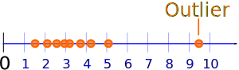
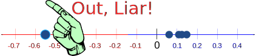
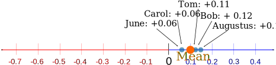

Outliers
"Outliers" are values that "lie outside" the other values.

When we collect data, sometimes there are values that are "far away" from the main group of data ... what do we do with them?
Example: Long Jump

A new coach has been working with the Long Jump team this month, and the athletes' performance has changed.
Augustus can now jump 0.15m further, June and Carol can jump 0.06m further.
Here are all the results:
- Augustus: +0.15m
- Tom: +0.11m
- June: +0.06m
- Carol: +0.06m
- Bob: + 0.12m
- Sam: -0.56m
Oh no! Sam got worse.
Here are the results on the number line:

The mean is:
(0.15+0.11+0.06+0.06+0.12-0.56) / 6 = -0.06 / 6 = -0.01m
So, on average the performance went DOWN.
The coach is obviously useless ... right?
Sam's result is an "Outlier" ... what if we remove Sam's result?

Example: Long Jump (continued)
Let us try the results WITHOUT Sam:

Mean = (0.15+0.11+0.06+0.06+0.12)/5 = 0.1 m
Hey, the coach looks much better now!
But is that fair? Can we just get rid of values we don't like?
What To Do?
You need to think "why is that value over there?"
It may be quite normal to have high or low values
- People can be short or tall
- Some days there is no rain, other days there can be a downpour
- Athletes can perform better or worse on different days
Or there may be an unusual reason for extreme data
Example: Long Jump (continued)
We find out that Sam was feeling sick that day. Not the coach's fault at all.
So it is a good idea in this case to remove Sam's result.
When we remove outliers we are changing the data, it is no longer "pure", so we shouldn't just get rid of the outliers without a good reason!
And when we do get rid of them, we should explain what we are doing and why.
Mean, Median and Mode
We saw how outliers affect the mean, but what about the median or mode?
Example: Long Jump (continued)
The median ("middle" value):
- including Sam is: 0.085
- without Sam is: 0.11 (went up a little)
The mode (the most common value):
- including Sam is: 0.06
- without Sam is: 0.06 (stayed the same)
The mode and median didn't change very much.
They also stayed around where most of the data is.
So it seems that outliers have the biggest effect on the mean, and not so much on the median or mode.
Hint: calculate the median and mode when you have outliers.
You can also try the Geometric Mean and Harmonic Mean.